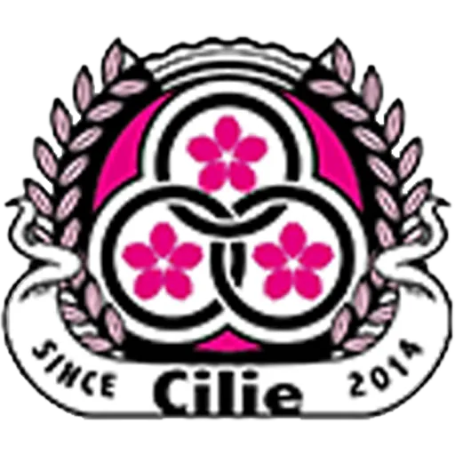

国際交流
試合の前後に残る会話、食事、気候、礼儀。遠征そのものを教育の一部として設計します。

ASIA CHALLENGE CUP
Presented by Cilie Sports Club Thailand · cilie.co
競技の頂点ではなく、文化が交差する場所へ。
試合の前後に残る会話、食事、気候、礼儀。遠征そのものを教育の一部として設計します。
タイの名門クラブJリーグ下部組織など、流儀の違う強さが、同じ規則の下でぶつかります。
サッカーの技術だけではなく、人間力を磨く。Cilie が大切にする指標の一つです。
異なる言語と流儀が交わる場所で、子どもたちの視野が開きます。
Chapters
Partners
Cilie Sports Club と共に歩む企業をご紹介します。